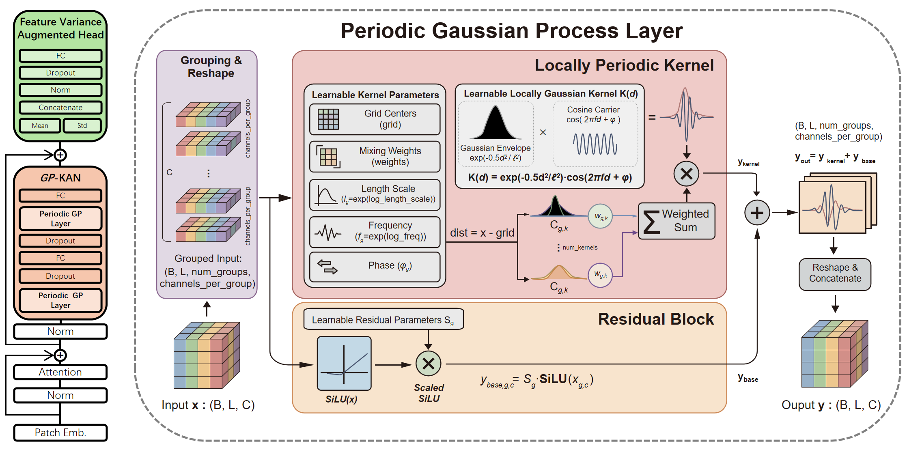
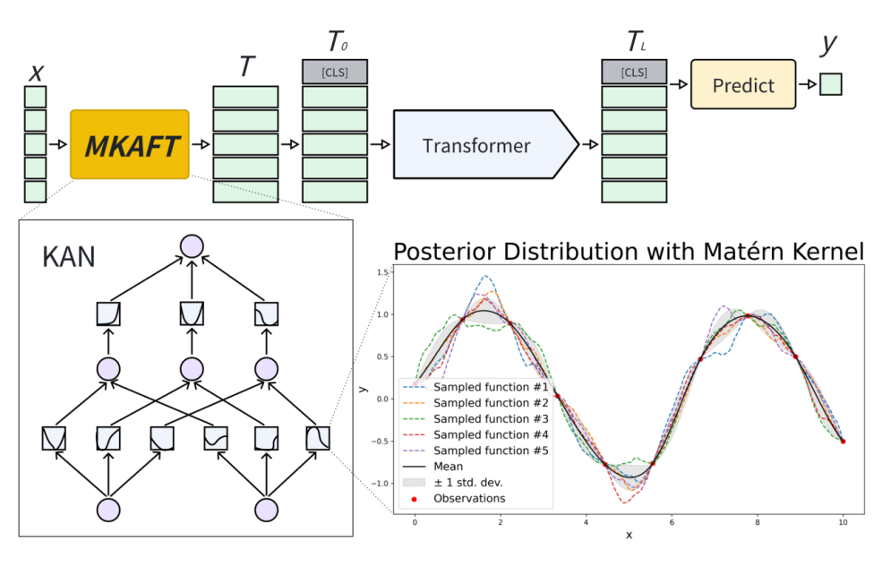
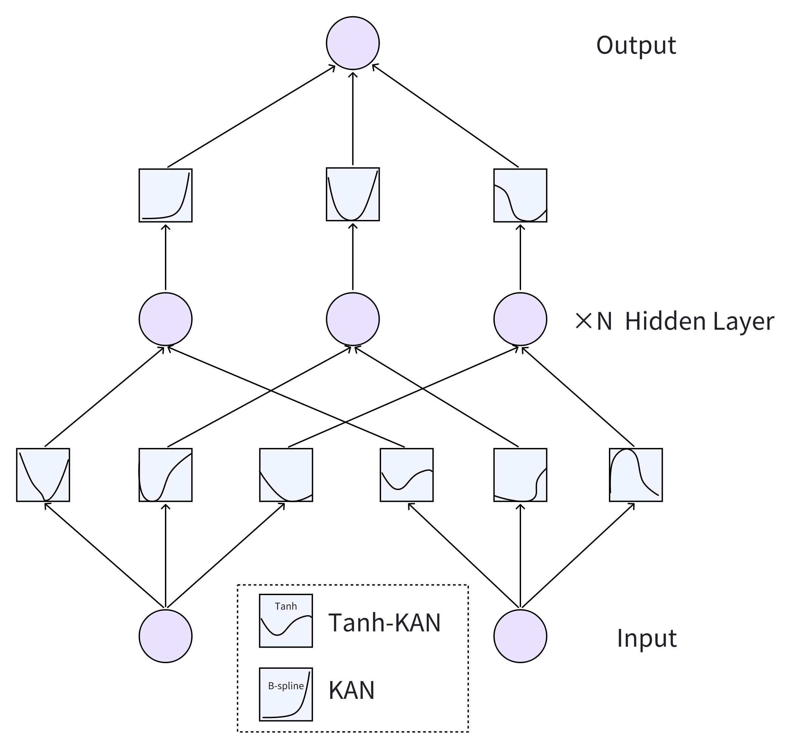
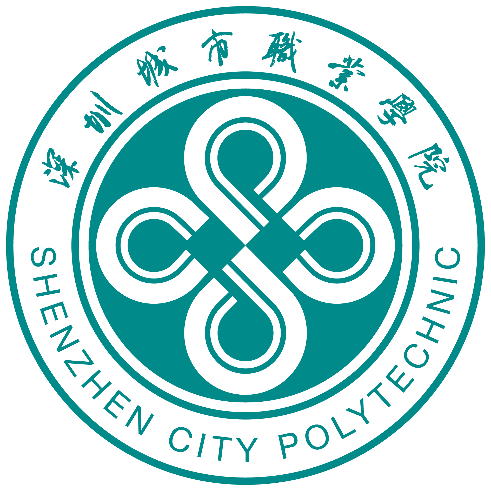

Short Bio
I am a Ph.D. candidate in Engineering at the Faculty of Engineering and Quantity Surveying, INTI International University, Nilai, Malaysia, and a full-time researcher at the School of Information and Communication Technology, Shenzhen City Polytechnic.
My research focuses on efficient artificial intelligence, lightweight neural network architectures for edge devices, and practical edge-computing solutions. I am particularly interested in making modern AI models more accurate, efficient, and deployable in real-world settings, including vision-language models and on-device intelligence.
Before joining Shenzhen City Polytechnic, I worked on AI algorithm performance optimization at Xiaomi and researched image-algorithm applications for TFT-LCD defect detection at TCL Industrial Research Institute. I also work on research and curriculum development in AI mobile applications.
Research Interests
Efficient AIEdge IntelligenceLightweight Neural NetworksVision-Language ModelsOn-device LearningIndustrial Vision
Selected Publications
† Corresponding author. For the latest record, see my ORCID profile.
-

GP-KAT: Enhanced Kolmogorov–Arnold Transformer With Periodic Gaussian Process for Anomaly Detection in Thin-Film Transistor Array Manufacturing
Wei-Wei Chen, Yongwei Liao, Wai Yie Leong†.
IET Signal Processing, 2026 ·
DOI
-

Enhancing FT-Transformer With a Matérn-Driven Kolmogorov-Arnold Feature Tokenizer for Tabular Data-Based In-Bed Posture Classification
Bing Zhou, Wei-Wei Chen†
-

Optimizing In-Bed Posture Classification Using Tanh-Activated Kolmogorov–Arnold Networks (Tanh-KAN)
Wei-Wei Chen, Bing Zhou, Wai Yie Leong†
IET Signal Processing, 2025 ·
DOI
Education
2024.05 – Present
INTI International University, Nilai, Malaysia
Ph.D. in Engineering, Faculty of Engineering and Quantity Surveying
Supervisor:
Prof. Leong Wai Yie 2018.09 – 2021.07
Fuzhou University, China
M.E. in Integrated Circuit Engineering, School of Physics and Information Engineering
Supervisor:
Prof. Frank Yan 2013.09 – 2017.07
Jimei University, China
B.S. in Mechanical and Energy Engineering
Experience
2022.09 – Present

Shenzhen City Polytechnic
Full-time Researcher, School of Information and Communication Technology
2021.06 – 2022.09
Xiaomi Shenzhen
Software Engineer · AI algorithm performance optimization on Xiaomi devices
2019.07 – 2020.09
TCL Industrial Research Institute
Research Intern · Image algorithms for TFT-LCD defect detection
Honors & Achievements
- 2026.01 — Best Conference Paper Award, 9th Eurasian Conference on Educational Innovation 2026, for the paper “Fostering AI Literacy and Behavioral Engagement through Educational Robotics: A Longitudinal Study of Micro-Majors in Vocational Education”.
- 2025.12 — Third Prize, 1st Shenzhen–Hong Kong–Macao Industry–Education Integration Technology Innovation Competition (Open Challenge Track), for the project “Frontier Large-Model General Service Robot Intelligent Verification Platform” .
- 2025.12 — First Prize, 6th Guangdong Provincial Micro-lecture Competition for Technician Colleges.
- 2024.12 — First Prize, Guangdong Technician Excellent Paper Selection.
- 2024.12 — Third place and honorary title of “Shenzhen Technical Expert” in the Shenzhen Skills Competition (Service Robot Application Technician).
- 2024.04 — Certified vocational skill evaluator for AI Trainer, Shenzhen Artificial Intelligence Industry Association.
- 2023.12 — Lead lecturer for the provincial-level quality course “Java Application Development”.
- 2023.05 — Fourth place, Guangdong Province Mobile Light App Development Vocational Skills Competition.